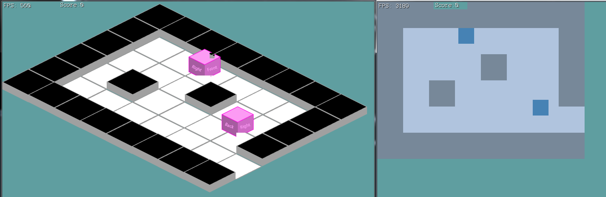
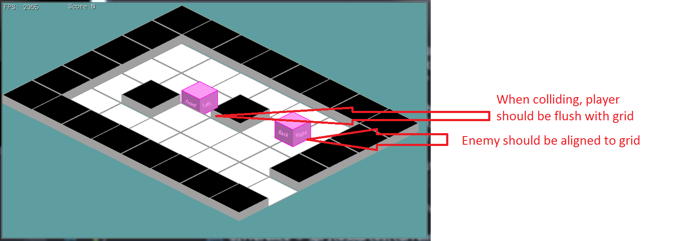

Characters
Moving the characters into an isometric view might be a bit of a challenge. We're going to have to refactor far more code here than in the previous sections of the tutorial.
While doing all of this, keep in mind we are not doing collisions or any logic in an isometric space. Isometric is only a view, we still handle collisions and items in world space.
Recall there are three important spaces: world space, camera space and screen space. Applying an isometric projection only changes the camera space. "Applying an isometric projection" might sound fancy, but reality, that's what the CartToIso in Map.cs does.
Rendering World Space
Because we're doing all our logic in world space debugging will be a lot easyer if we can also see world space! If a collision looks wrong, it happens in an isometric view, but not in a top down view of world space then we know that the issue is render code and not collision code.
First, let's make a new variable in Game.cs. A public, static bool. Call it ViewWorldSpace and set it to false by default.
Update the Update function of Game.cs. Pick any key (I suggest 'U'), when that key is pressed toggle the ViewWorldSpace boolean.
In the Render function find where offsetPosition.X and Y are hard coded. Wrap that bit of code in an if statment, we only want to hard code the X and Y if ViewWorldSpace is false
Next, let's undo the isometric projection. In Map.cs find the CartToIso and IsoToCart functions. If Game.ViewWorldSpace is true, return the arguments without any modification.
Last, we need to make a slight modification to the rendering code of Tile.cs. If Game.ViewWorldSpace is true, Draw a rectangle. The Location of the rectangle is going to be WorldPosition, while it's size is going to be 69 x 70. (69 is 1/2 the width of each tile, 70 is the height of each tile). Thse are the numbers we set up in the constructor of Map.cs for the size and position of tiles. If Game.ViewWorldSpace is false, render everything as usual.
Further more, when Game.ViewWorldSpace is true and we render a rectangle, if the tile is walkable render the rectangle in Color.LightSteelBlue, otherwise render it in Color.LightSlateGray.
Run the game and toggle the display. Your non-isometric world view should look like this:

No more 30
Now that we can view world space just fine, we notice that the size of the world space tiles is MUCH larger than the size of our player and enemy tiles. Let's go ahead and fix this next.
The sizing issue happens because the map is rendering with our worlds current tile size, while the character an enemy have 30 hard coded for the tile size. That's no-bueno.
We have a global define in Game.cs, find the tileSize global variable and delete it. In it's place, add these two new defines:
public static readonly int TILE_W = 69; // 138 / 2
public static readonly int TILE_H = 70; // 70
We just caused a lot of compiler errors be removing tileSize, go ahead and fix these. Instead of tileSize, use TILE_W and TILE_H wherever appropriate. Appy H to Y values and W to X values.
Now it's time to replace EVERY OTHER INSTANCE of 30. Search the entire project (Control + shift + F) for 30, replace every instance with TILE_W or TILE_H, depending on which one is appropriate.
Update the constructor of Map.cs to use the constants from Game, instead of hard coding 138 / 2 and 70.
In Tile.cs we hard coded the debug render size to 69x70. Switch these to be the constants in Game.cs, also, there is a height text of 70 hard coded in there, change that 70 to Game.TILE_H.
Run the game, if you switch into debug view, even tough link is the wrong size he can walk around the map. He just looks small. Confirm that collision and shooting work before moving on to the next section.
Display the Character
Let's take a little bit of time to refactor Character.cs. The first thing i'm going to do is remove the code that renders the debug yellow square at the characters registration point.
Next, we're going to updat the character sprites. In PlayerCharacter.cs and in EnemyCharacter.cs, change the sprite sources to:
- AddSprite("Down", new Rectangle(52, 19, 85, 84));
- AddSprite("Up", new Rectangle(266, 19, 85, 84));
- AddSprite("Left", new Rectangle(155, 19, 85, 84));
- AddSprite("Right", new Rectangle(375, 19, 85, 84));
Back in Character.cs, let's go ahead and project these characters into an isometric space. In the Render method after the offset is applyed to renderPosition, but before the y correction takes place go ahead and call Map.CartToIso.
MapCartToIso will transform renderPosition from a cartesian space into an isometric space. Do this the same way you have already done it for Tile.cs
Lastly, back in Game.cs, go ahead and change heroSheet and npcSheet to point to the isometric sprite sheet.
Run the game, the isometric view should look pretty close to correct. Moving around is going to be broken, but visually it's close to good. We're going to just ignore z-fighting issues for now. This is what your game should look like:

Moving the character
If the moving code is broken, then it's broken in a few places. Switch to the overhead view and see if movement is broken... Well it's not really broken, but it's also not correct. We should only see squares in this view, not sprites.
In character.cs, update the render method so if Game.ViewWorldSpace is true, we draw a square (use the Rect getter for it's rectangle), make it Color.SteelBlue. If Game.ViewWorldSpace is false, draw the texture as usual.
Looking at our new debug render, the errors are quiet obvious! The player is bigger (wider) than the floor tiles. That's a pretty big no-no. And how exactly does the size in this screen translate to the size of the iso sprite? After all the iso sprite only takes up a part of each tile.
Just like the size of each tile is no longer the same as the size of it's sprite, the isometric size of the player tile is not the same as the size of its sprite. We have to apply the same transform to player as we do to tiles, so we are going to cut his width in half. How about the height? We will just make it the same as his width... For now.

Character alredy has a height variable. Delete it. Change the constructor to just do nothing with the height argument, ignore it.
Inside the Rect getter, make two new local intgers: width and height. width is going to equal the current sprites width, divided by two. height is going to equal width. Return a rectangle at Positon`, with a size ofwidth,height```. The if statement in here is no longer needed.
The Center getter already uses the Rect getter, there is nothing to change here.
In the Corners getter, change w to equal Rect.Width and h to equal Rect.Height
Lastly, there is a reference to the old height variable inside of the Render function. Change the line to subtract Rect.Height instead of the old member. Also, because the if statment this is in no longer makes sense, change it to:
if (SpriteSources[currentSprite][currentFrame].Height > Rect.Height) {
Run the game, walking around and collision should be working pretty well. Especially in overhead view:

Rendering artifacts
We have a few rendering artifacts going on. The most obvious of which is the bits of tile that render above the character. This happens becuase what gets written into the depth buffer is a square. Even if a diamond is rendered to the clor buffer, a square is rendered to the depth buffer.
This square ends up putting pixels where they are not supposed to go! Open up GraphicsManager.cs, go to the Initialize function, and there are two lines commetned out:
GL.AlphaFunc(AlphaFunction.Greater, 0.1f);GL.Enable(EnableCap.AlphaTest);
Go ahead and comment these two lines back in, they will make it so alpha (transparent) pixels don't get written into the depth buffer.
The next issue is that the character does not line up to the grid!

This is not an easy one to fix. The issue is our player sprite uses it's middle left as a registration point right now. But in an isometric view, everything needs to be modeled relative to a tile. Look at this picture again:
The + on the left marks the registration point, it's the top left for the floor tile. BUT, it also marks the registration point for the player! Notice how the players registration point doesn't actually touch the sprite!
So how do we figure out how much space we need to offset the player by? Looking at the picture, it's (TileCenter - TileW * 0.5) - (PlayerCenter - PlayerW * 0.5) Doing the math with our known numbers, that comes out to about 25.
You could calculate this at runtime, to support different size enemies, but we're just going to keep it simple. So, where to apply this offset? In Character.cs, the Render function. Find where the renderPosition is projected into isometric space. Directly after that add 25 to it's X component!
There is one last bug. If you walk into an obstacle from the X direction you will first be behind it, but then quickly pop in front of it! We have to offset the X position of the player by 1 pixel just like we did the Y position of the player. Look at the top of the Render function in Character.cs, and offset X by 1 the same way Y is offset by 1.
Run the game, everything should now work in an isometric environment. Your character can walk around, collide with walls and even enemies. As an adde bonus, the walls even have height to them!